图标跟着一天走
一天四时
同一颗晨星，一天里换四次天色。每个时段都有完整版（大图标、启动画面）和小图标版（16–64 像素：网页标签、托盘、列表）——小图标不是简化的符号，是同一幅画放大主角、加粗线条，也在动。
状态
图标会跟着“她”的状态变：在想事情时晨星呼吸快一倍多；睡着时换成守夜里打盹的星；天亮或醒来时放一遍破晓开场。用 AX.state('think') 切换，或者直接用对应的文件。

睡着了icon-night-sleep.svgLogo
横版、竖版、只有字，各有浅色底（light）和深色底（dark）两版；每个都有静止的 SVG / PNG 和会动的 SVG（图标呼吸，名字一个字一个字浮现）。字已经转成路径，用的地方不用装字体。换成别的名字：python tools/make_logo.py --name 你的名字 --sub PINYIN。
颜色和字
主色是玫瑰粉，渐变从玫瑰到蜜桃再到晨金（曦光）。界面有四个主题，颜色都是 CSS 变量（--ax-*），也导出成了 tokens/tokens.json 和 Tailwind 预设。标题和“她说的话”用思源宋体（Noto Serif SC，已带在 fonts/ 里，可商用），正文用系统字体。
远黛 · 曦光初现
Noto Serif SC 600 · 标题、logo、她说的话
正文用系统字体：苹方、鸿蒙、微软雅黑。The quick brown fox jumps over the lazy dog.
--ax-font · 15px / 1.6
界面
按钮、表单、卡片、标签页、进度、对话、提示条、弹窗、呼吸光球、曦光天空……纯 CSS，任何框架都能用。这里放几样，全部在 组件页。
用到别的项目里
把整个 alaxee-kit/ 复制过去（或者只拿需要的子文件夹）。网页项目这样引入：
<html data-ax-theme="auto"> <!-- auto | xi | dusk | glass | alaxee --> <link rel="stylesheet" href="alaxee-kit/fonts/fonts.css"> <!-- 宋体，可选 --> <link rel="stylesheet" href="alaxee-kit/ui/alaxee-ui.css"> <link rel="icon" data-ax-icon="alaxee-kit/brand/icons/animated/" data-ax-icon-size="small"> <body class="ax ax-root"> <img class="ax-appicon" data-ax-icon="alaxee-kit/brand/icons/animated/" alt=""> <!-- 跟着时段、状态换 --> <button class="ax-btn ax-btn--dawn">开始</button> <script src="alaxee-kit/ui/alaxee-ui.js"></script> <!-- AX.theme() AX.state() AX.toast() … --> </body>
桌面程序：Windows 图标用 brand/icons/ico/，托盘用 brand/tray/（平常一张、想事情时 12 帧呼吸）。React / Vue / Tailwind、App 图标、logo 换名字等，见 README.md。
里面有什么
| 文件夹 | 是什么 |
|---|---|
brand/icons/animated/ | 会动的图标 SVG：四个时段 × 完整版 / 小图标 / 想事情，加睡着、破晓开场 |
brand/icons/static/ | 静止的图标 SVG（印刷、设计稿、不想要动效的地方） |
brand/icons/png/、ico/ | PNG 16–1024 像素（≤48 用小图标那一版）、Windows 多尺寸 .ico |
brand/logo/ | 横版 / 竖版 / 只有字 × 浅色 / 深色 × 静止 SVG、PNG、会动的 SVG |
brand/web/ | 网页和 PWA：favicon.ico、favicon.svg、apple-touch-icon、192 / 512 / 可遮罩图标、site.webmanifest、贴进 <head> 的几行 |
brand/tray/ | 桌面托盘：四个时段各一张，想事情时的 12 帧呼吸，睡着的那张 |
brand/xi/ | 小曦（吉祥物）白天 / 晚上 |
brand/preview/ | 动效预览 GIF（发给别人看） |
ui/ | 界面模板：alaxee-ui.css、alaxee-ui.js、组件页 |
tokens/ | 设计变量：tokens.css（只有变量）、tokens.json、tailwind.preset.js |
fonts/ | 思源宋体（Noto Serif SC）woff2 和 fonts.css，SIL OFL 可商用 |
tools/make_logo.py | 换成你的名字生成整套 logo |